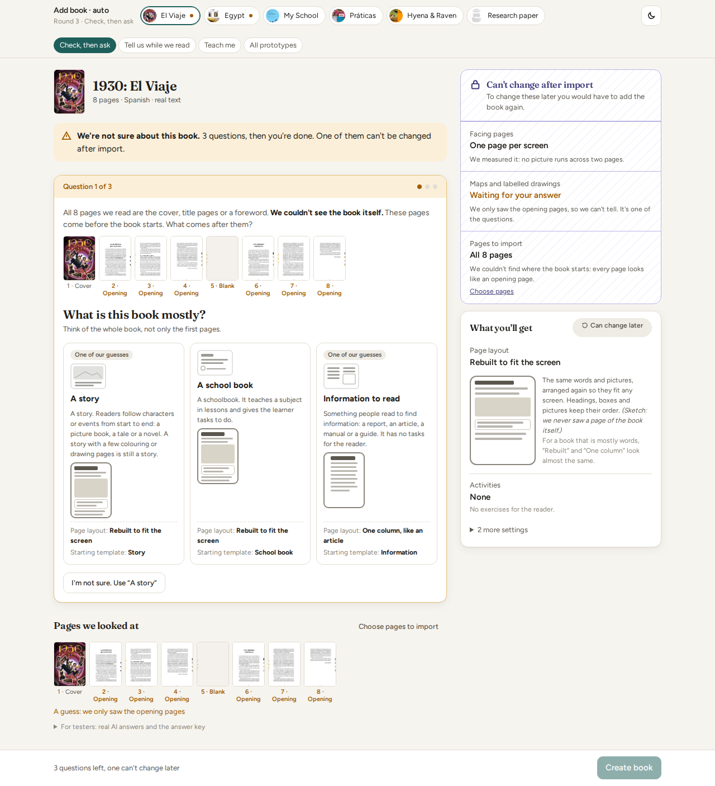
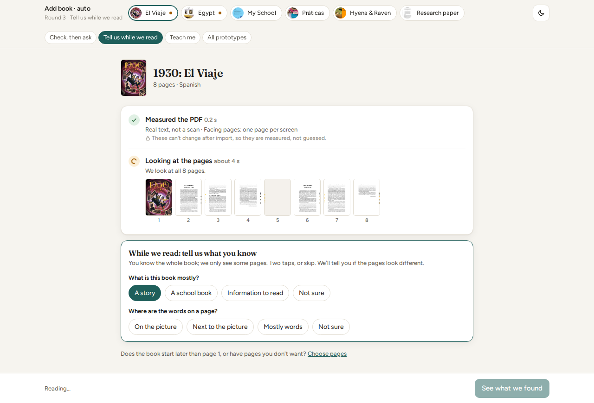
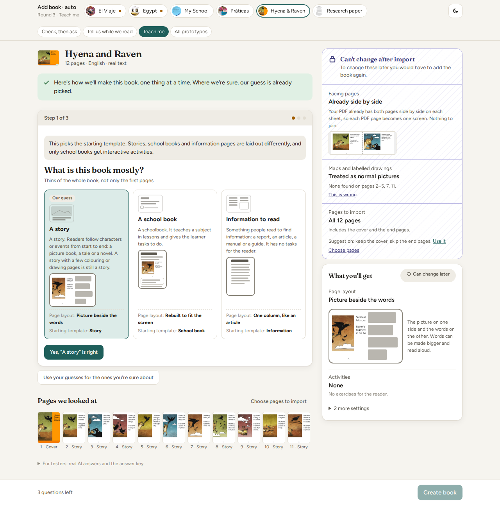
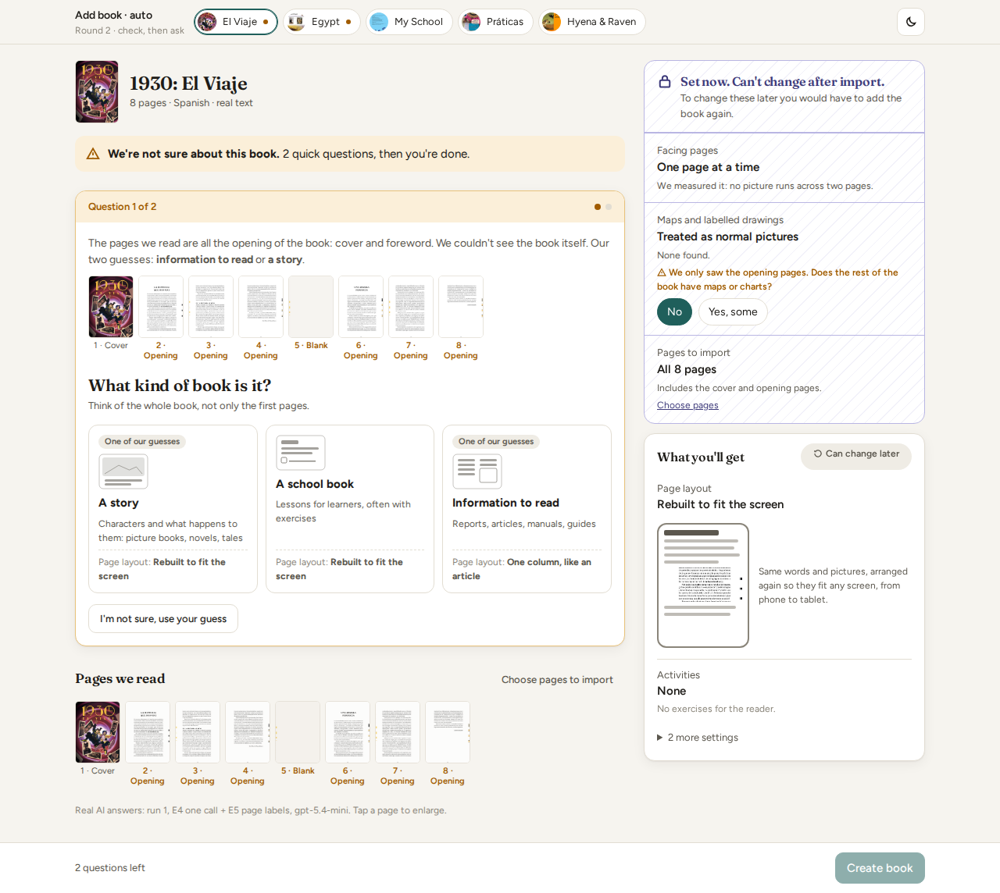
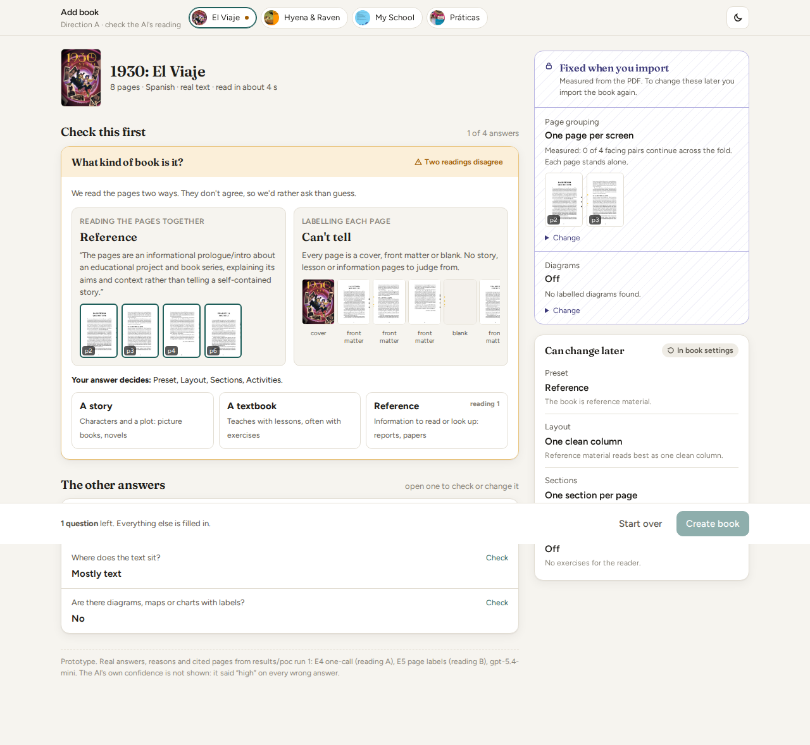
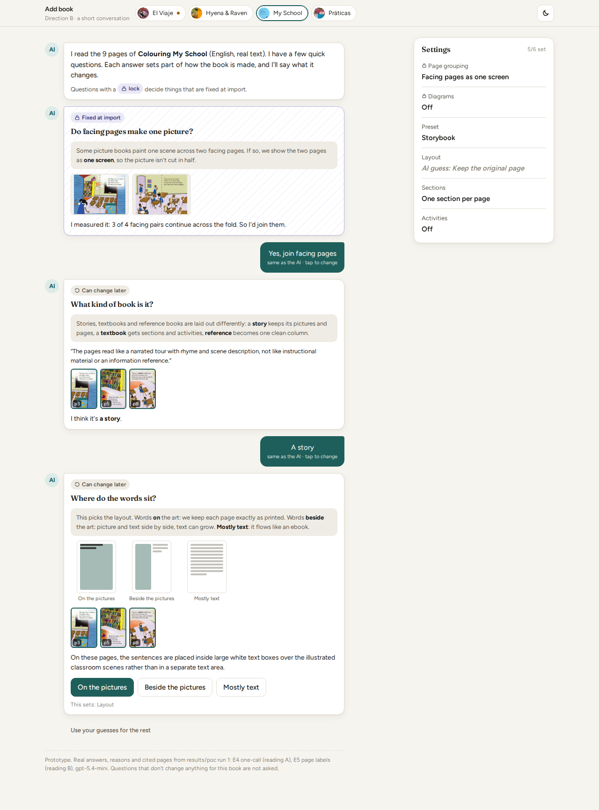
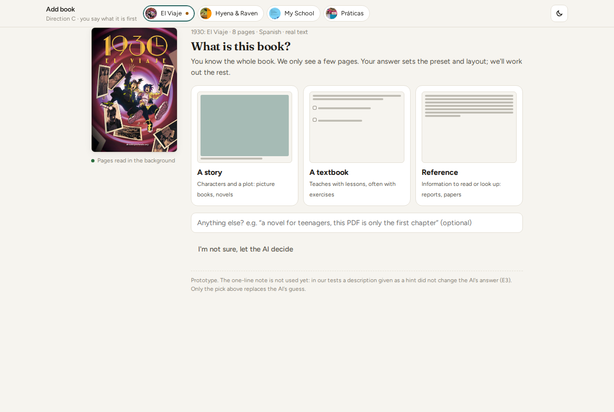

Add Book auto mode: prototypes
ADT Studio issue #333. Each prototype uses real AI answers, reasons, cited pages and page images from the PoC run (results/poc, via prototypes/data). The dot on a book tab means the AI asks something on that book. El Viaje (only the foreword was in the PDF) and Egypt (two guesses differ) are the books where the AI can be wrong.
Review-screen variants
“The AI runs, shows what it picked, the user confirms or changes; ask only if needed.” Five variants of that review screen: confirm-variants.html.
Round 3 · three directions to try side by side
The same six books, rules, wording and data in all three; only the flow differs. The tabs at the top of each prototype switch between them on the same book. Settings that can't change after import always sit in the striped box with a lock.

Check, then ask
Tests: is "Looks right" plus 0–3 questions only when unsure enough? Default candidate.
Sure → one line and a summary. Unsure → every question in one card, counted. El Viaje's maps question is question 3, locked, nothing picked.


18 screenshots in shots/. Also try slow internet and a 200-page strip (sketch).

Tell us while we read
Tests: does the user's own answer (given during the 4 s wait) beat the AI's guess on hard books, without slowing easy ones?
Two taps while the pages load. After: "Matches what we saw", or a side-by-side "You said / the pages look like" card when both AI guesses disagree with you.


10 screenshots in shots/.



Questions per book in round 3
| Book | Check, then ask | Tell us while we read (told kind + words) | Teach me | AI right? |
|---|---|---|---|---|
| El Viaje | 3 (kind, words, maps 🔒) | 1 (maps 🔒) | 3 | Kind is a guess from the foreword |
| Egypt | 1 (kind) | 0 | 3 | Both kinds are acceptable |
| My School | 0 | 0 | 3 | Yes |
| Práticas | 0 | 0 | 2 | Yes |
| Hyena & Raven | 0 | 0 | 3 | Yes |
| Research paper | 0 | 0 | 1 | Yes |
Counts are for run 1 of the AI, computed by the prototype; "Tell us" assumes the user gives the right kind and words. A conflict card in "Tell us" counts as an extra question. Each prototype has a "For testers" box with the AI's answers and the answer key.
Earlier rounds (kept for reference)
These use older wording and only four or five books. The round 3 prototypes replace them.

R2 · D · Check, then ask
First mixed flow. Ana found a hidden third question in the side panel.

R1 · A · Check the reading
Everything pre-filled; asks only where two readings disagree.

R1 · B · Short conversation
One question at a time. Became "Teach me".

R1 · C · Tell us first
User picks the kind first. Became "Tell us while we read".
Built by prototypes/_build/build.py from _build/round3.html; screenshots by _build/shots.mjs (Playwright).